PORTFOLIO of FRANCISCO SCIARAFFIA
October 2023
Technical Artist / Technical Designer / Gameplay Programmer
SIMPLIFIED COLLISION TOOL
A spline-based simplified collision tool. I initially designed a simpler version for my game "Bandits." Later, I suggested a similar tool to the "Hogwarts Legacy" team and developed this advanced version for them.
The tool uses a single InstancedStaticMeshComponent with a 8-verts box mesh, scaled for each segment.
It's efficient to process. While it's designed not to be overly lengthy, it can be, without causing noticeable hitches in the editor.
This tool is built in C++, allowing me to directly expose the InstancedStaticMeshComponent Collision properties to the Actor details panel.
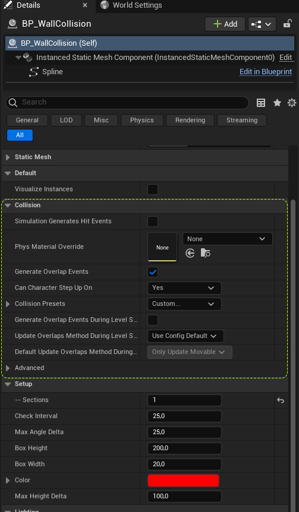The wall adjusts to the spline curve, generating new instances/sections only when the delta rotation surpasses the set maximum delta, which is a configurable parameter.
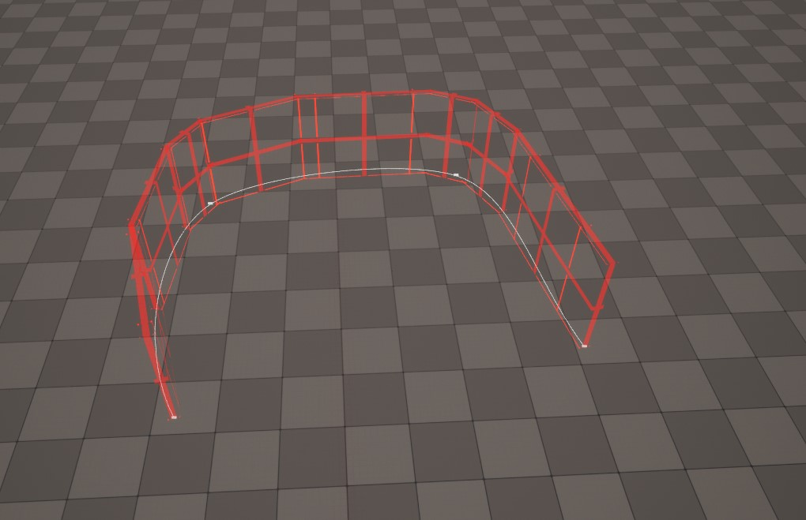Here, you can distinctly see each section created in this instance.
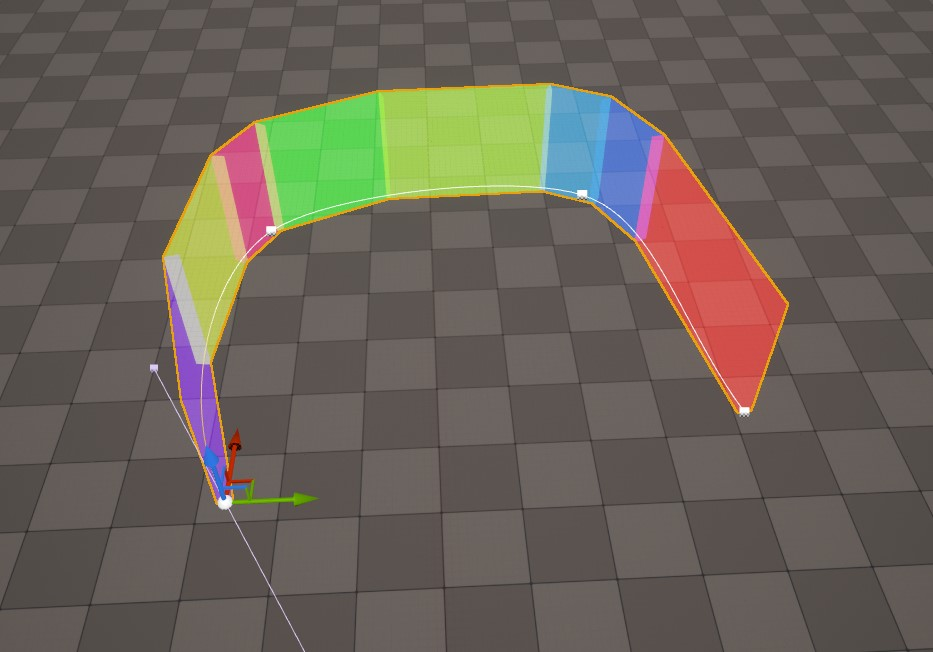The wall is also adaptable to handle pitch rotation.
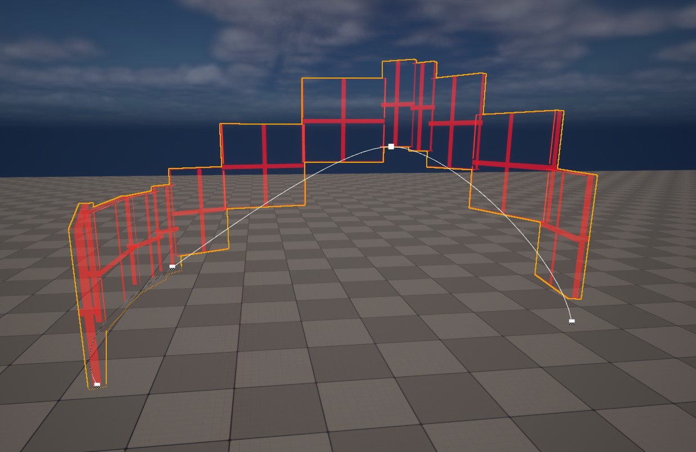A key feature of the wall is how the instances/segments align perfectly on the outside corner, ensuring no gaps or spaces where one could get snagged. All thanks to the math behind it.
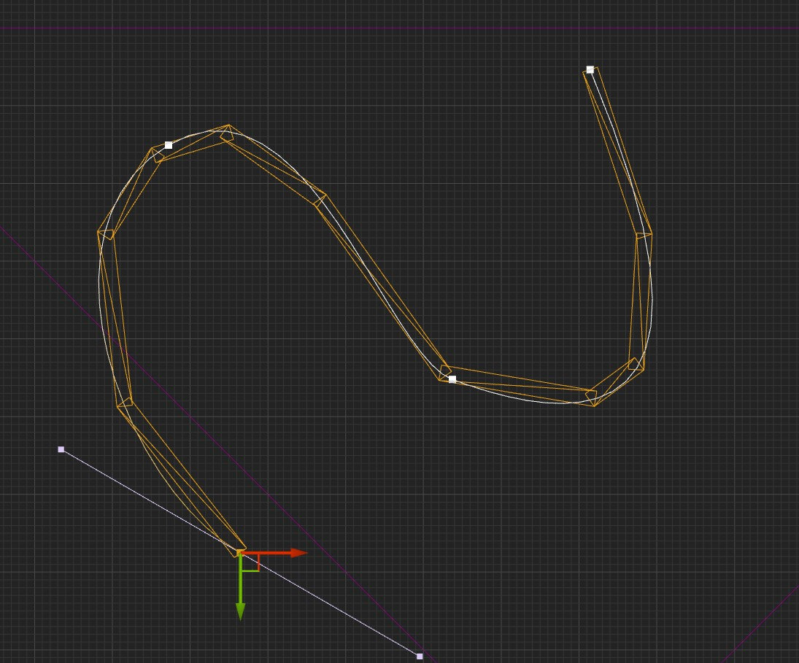MESH WALL TOOL (USED IN HOGWARTS LEGACY)
This tool may seem like a typical spline mesh tool, but it uniquely uses Spline Mesh Components only where necessary. Otherwise, it opts for Instanced Static Mesh Components, or a single regular Static Mesh for single instances.
The tool offers additional features, such as selecting specific Start and/or End meshes, to place pillars between each section, or using pillars as start/end meshes.
A video demonstration of the mesh wall actor setup, showcasing its use in building a wall.
In the details panel, users can define a list of meshes to select from randomly. Additionally, weights can be assigned to modify their selection probability.
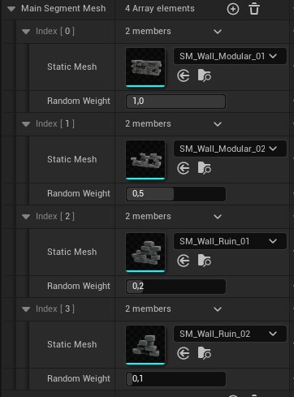Here's an example of a stone wall that requires curvature.
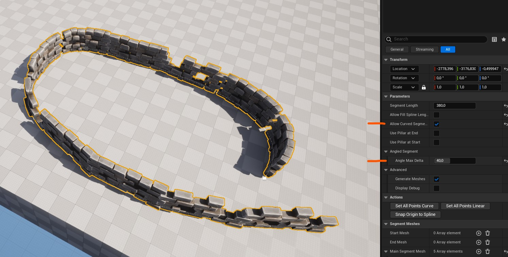In this debug mode, you can see represented by red lines that only sections with significant curvature utilize the Spline Mesh; the rest are made up of Instanced Static Meshes.
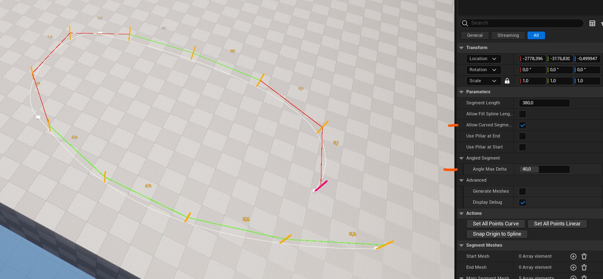The fence wall design does't need any curved sections.
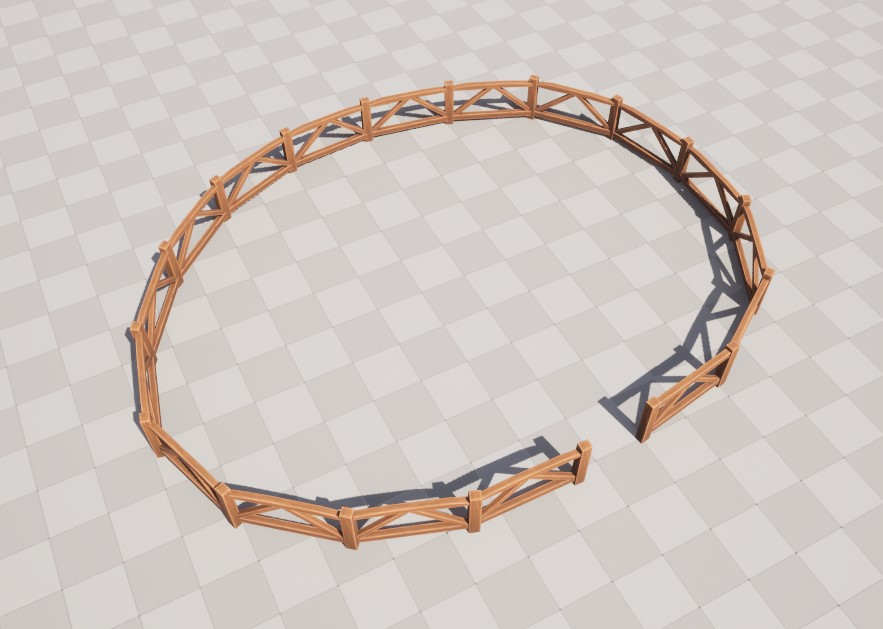As a result, no Spline Meshes are used in this instance.
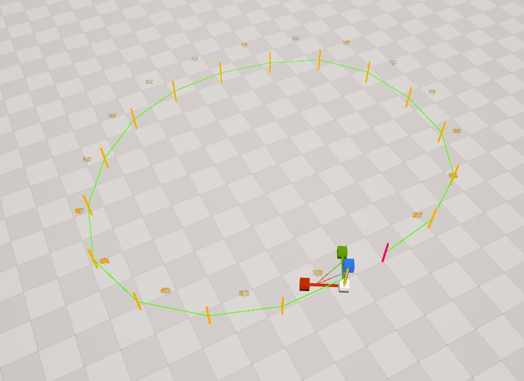HOGWARTS LEGACY - PROXY TOOL
In "Hogwarts Legacy", levels were constructed using multiple sublevels as layers. This approach rendered HLODs unsuitable. To address this, I developed a system that would utilize a custom SetupMap to load all the sublevels associated with a building or structure. The system would then capture a comprehensive snapshot to produce a Proxy, inclusive of all relevant elements. This mechanism was also equipped to accommodate the snowy winter variation. Eventually, a ProxyContainerActor would be automatically generated in the LOD level. We also created a weekly TeamCity job to ensure that any modifications artists made to any level would soon be mirrored in the LOD Proxies.
For each building requiring a proxy, a configuration was established within the setup maps. Here, a volume was placed and adjusted via a convenient Utility Widget.
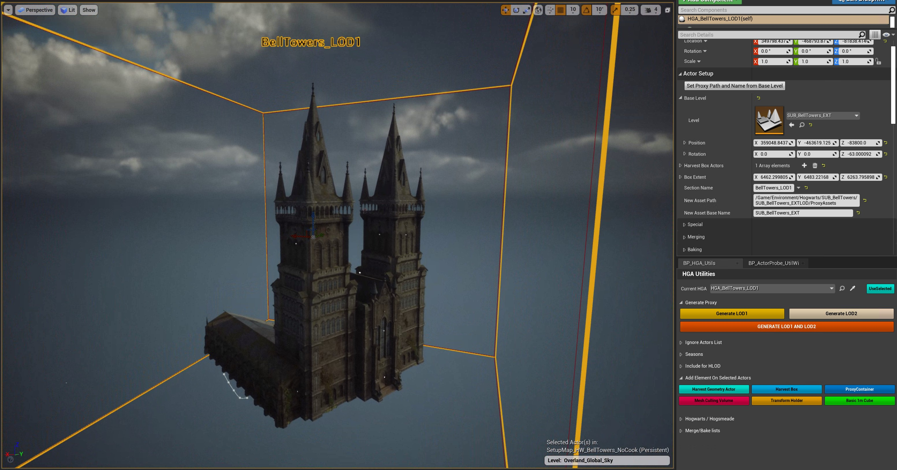The process output 3 meshes, one for things that had a last-lod impostor; like windows, vines, and finer details. And 2 other proxies; a default one and a winter variant. Ultimately, these proxies were combined within the ProxyContainerActor positioned in the LOD map.
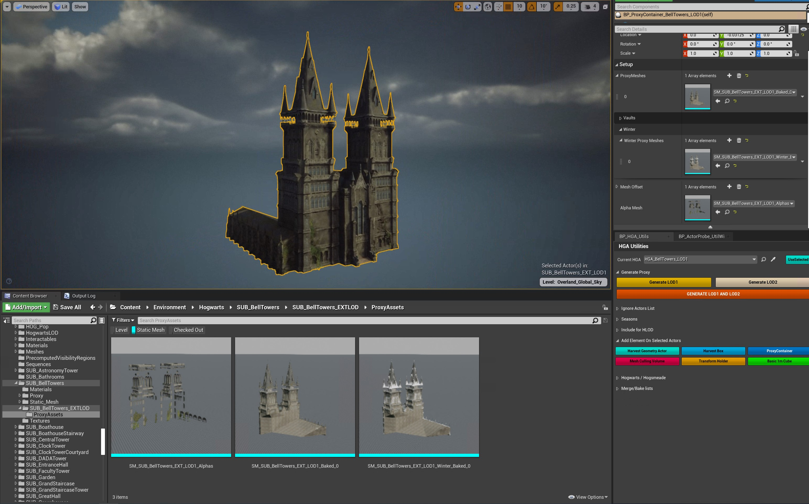This showcases the proxy containing only flat components, which significantly reduces the total polygon count.
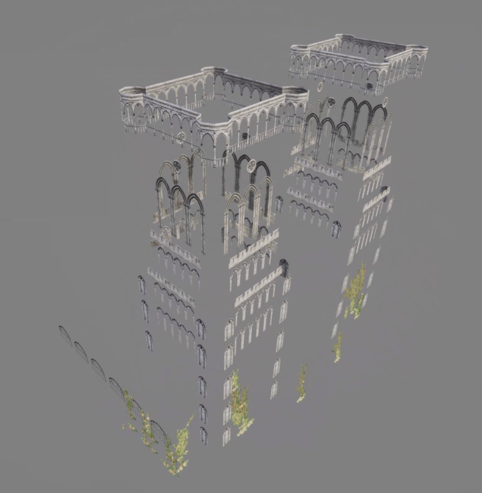This version of the proxy omits any mesh that had impostors. This exclusion drastically cuts down on triangle counts, aiding silhouette rendering. In the final rendition, both versions merge within the ProxyContainerActor, presenting a complete proxy with all its components.
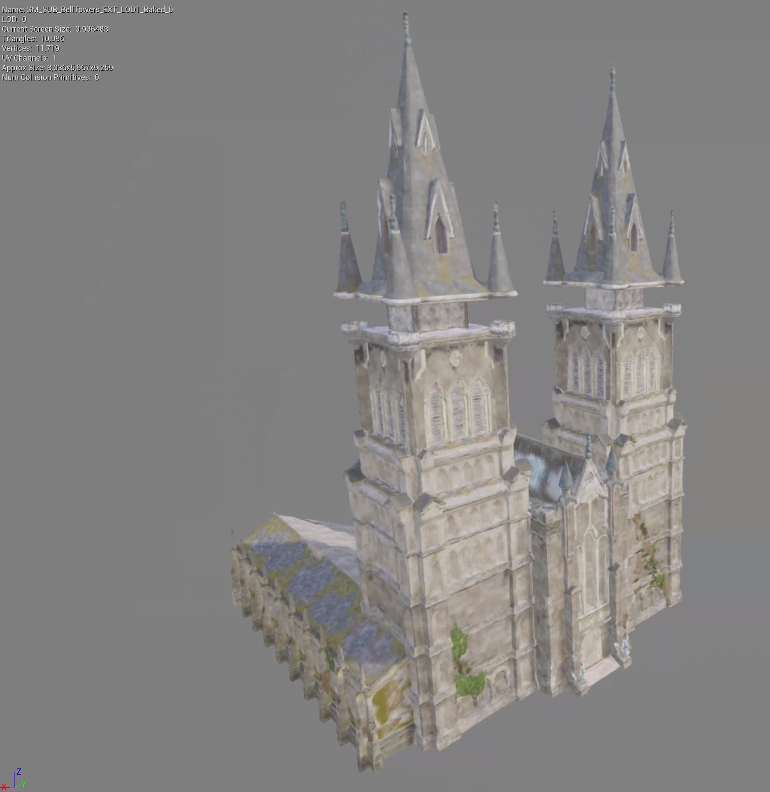The system was also adapted for World Composition Landscape LODs. Leveraging the same ProxyTool, but Unbound; it could generate a proxy for all actors and meshes on a given tile. Specific steps were executed for larger rock formations, hills, long spline tools, roads, etc. Collectively, this encompassed everything beyond the immediate vicinity of the player, including the very large and complex Hogsmeade Town and Hogwarts Castle.
HOGWARTS LEGACY - FAR FOLIAGE
A UE4 World Composition optimization that manages the distant foliage without creating foliage mesh proxies, the FarFoliage system exists as a distinct layer on top of the World Composition Tile environment. This arrangement allows it to manage all foliage-related elements, as World Composition Tile LODs do not include any foliage. The system also helps mask level streaming pops, as it operates independently. As players move, the system updates which distant foliage instances are displayed.
The first step was to identify all the relevant overworld foliage and store that information in a pre-computed list. We established a TeamCity job to carry out this step daily. This ensured that any modifications made by artists would be reflected in the distant foliage shortly after.
The image below is a snapshot of the entire overworld. The boxes indicate the bounds of the captured foliage per tile.
At runtime, there's a defined radius around the player, represented here by a large sphere. Beyond this sphere, normal foliage isn't rendered since the foliage's max-draw distance is set to align with the distant foliage system's radius.
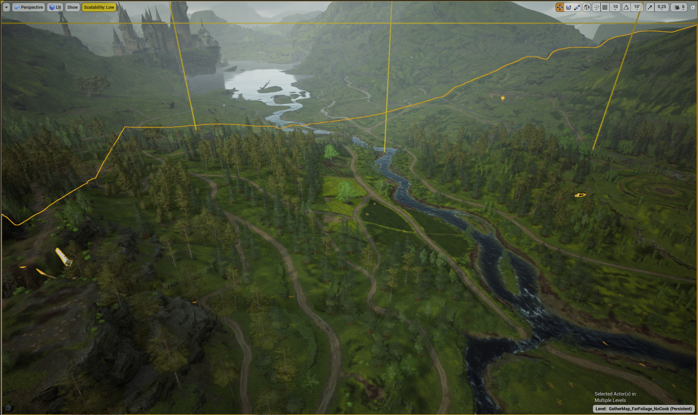In this image, I've highlighted the regular foliage. Outside the radius, all foliage is represented by impostors. Importantly, these impostors are used per tree type or family, rather than for each individual or unique tree mesh.
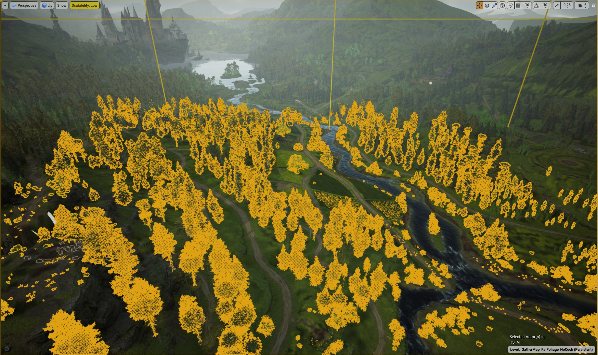As players move, the runtime system determines which distant foliage should be displayed. Meanwhile, the standard foliage utilizes Unreal's native optimization, fading out foliage beyond a set max-draw distance. Additionally, the system includes other enhancements, such as evaluating only after significant player movement, ensuring tiles are within the viewing frustum, and verifying they are not too far to be relevant at the time.
I might try to capture a video of this in action in-game...
MISC.
Things I've tackled that aren't linked to a specific project.
Since 2016, I've been developing and maintaining a plugin filled with handy C++ functions for Blueprints. These functions speed up my development process.
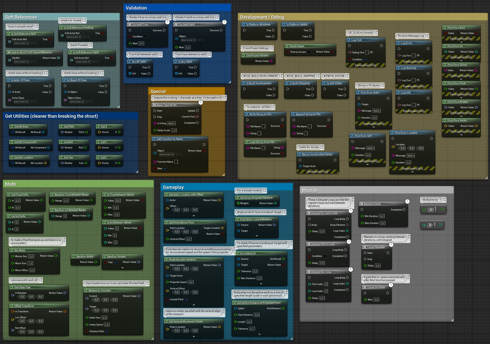I experimented with creating islands using hexagonal tiles. They originate from a central, volcano-like elevation and expand outward. This expansion continues until the formation loses its "energy", resulting in natural-looking shapes.
One of the first fully custom tasks I completed as a Technical Artist was this bridge. You set its length, and it would automatically calculate the number of required supports and their respective heights.

NETWORKED INVENTORY - ONLINE RPG PROTOTYPE
This project encompasses the core features needed for an Online RPG. Players can equip items, store them in containers, or add them to their inventories. All actions are seamlessly integrated with Unreal's networking system, and the server retains authority over every transaction.
The video demonstrates both a listen-server and a client interacting with the networked inventory/UI system, displaying consistent behavior on both sides.
All components are structured around the use of DataAssets. These assets provide detailed information about the items players interact with, facilitating seamless integration with the inventories and their respective UIs.
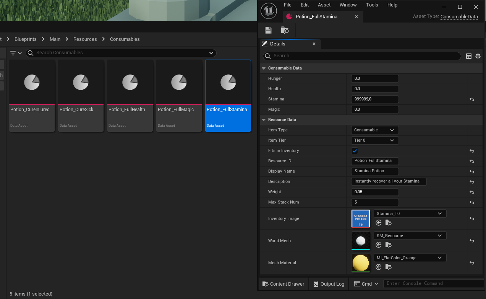RPG SIMPLE DIALOGUE SYSTEM AND SETUP
The dialogue system offers essential features without overcomplication. Utilizing Blueprints and 6 custom C++ nodes, it supports standard dialogues, branching conversations, questions, a default concluded state, and interactive world elements.
Within the game, the dialogue system can be seen in action. Towards the end, the player requests an NPC to unlock a door.
The system integrates six nodes. The first two are Latent Blueprint nodes which only complete once they receive their callback. The next two facilitate custom line displays, and the final pair are callbacks indicating the Latent Nodes can proceed.
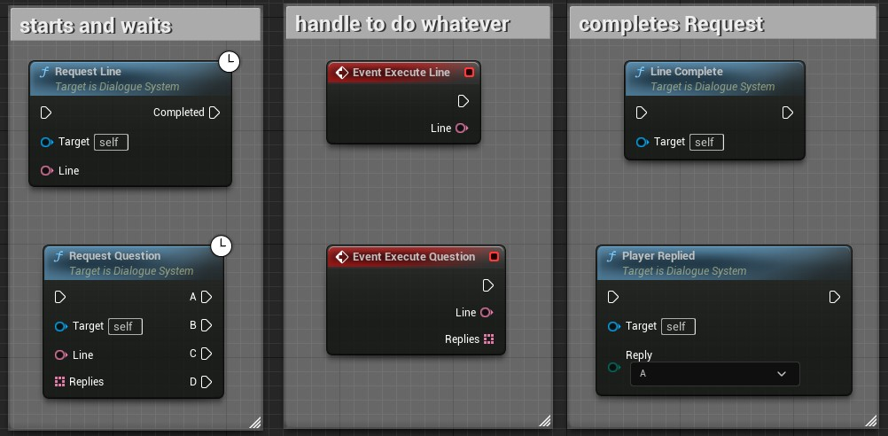By inheriting from a parent class managing the details (BP_DialogueSystem), child blueprints can focus solely on their specific dialogue scripting.
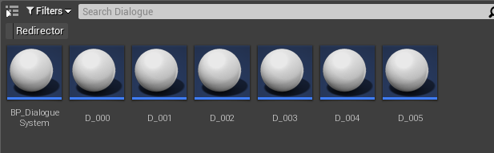Each script functions as an actor attached to an NPC in the world, enabling easy interaction with other world elements.
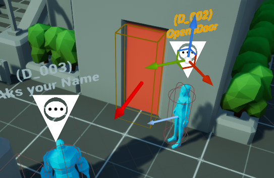Here's an example of how the blueprint dialogue script is built. Except for the custom Request line/question nodes, everything is vanilla Blueprints. the 'DoDialogue Event' is when dialogue is first initiated through the NPC host, and the 'DoFallback Event' is used instead when the primary dialogue has already been "used". Doing this is optional.
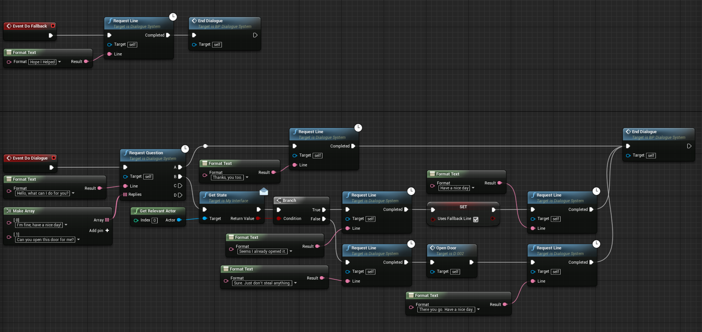This other example showcases a script built around a question, with the initial line being alternated when the player replies with the D option. Since this is all Blueprints, any type of script customization can be easily achieved.
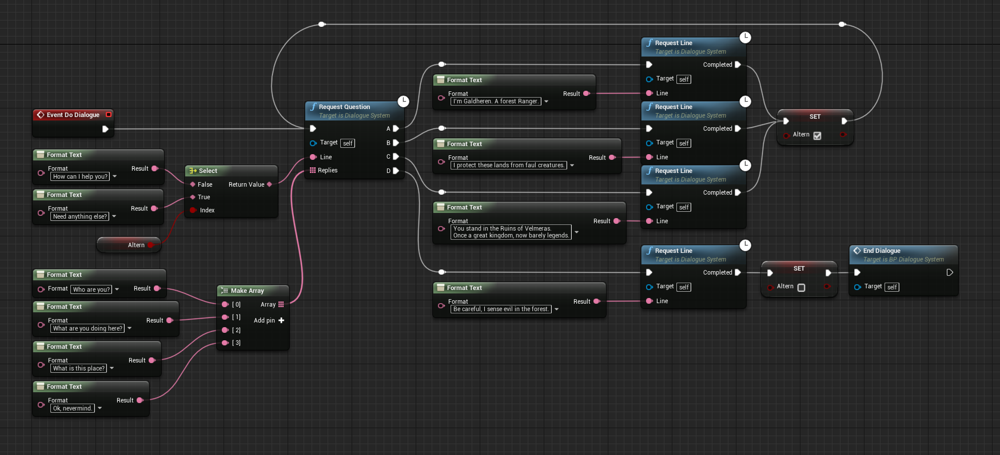MATERIALS FOR HALLUCINATION SEQUENCE
Created for Funcom's Dune Awakening (Yager co-development), the Spice Vision sequence immerses the player in intense hallucinations, portraying entities as sand, water, or shadows.
The Materials as a character runs in slow-motion.
Sand Material
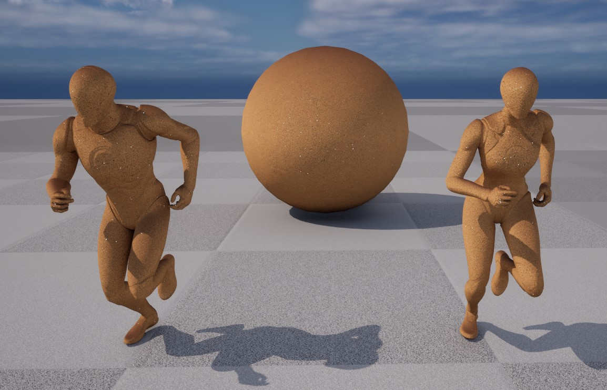Water Material
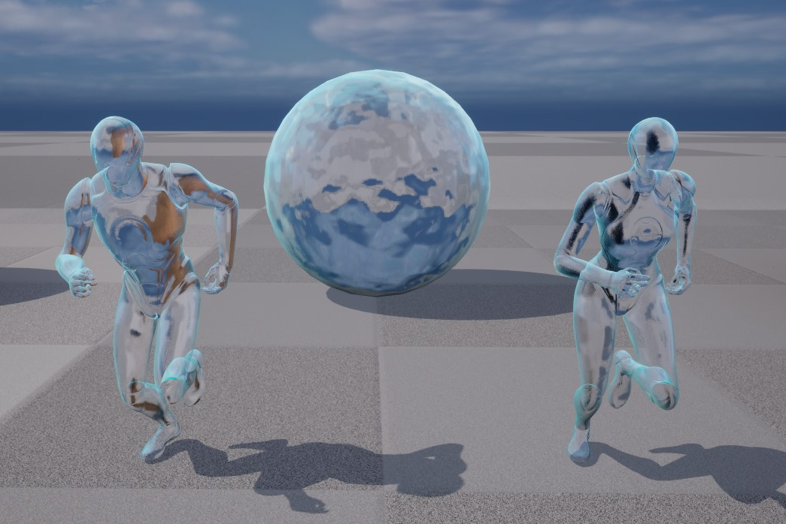Shadow Material
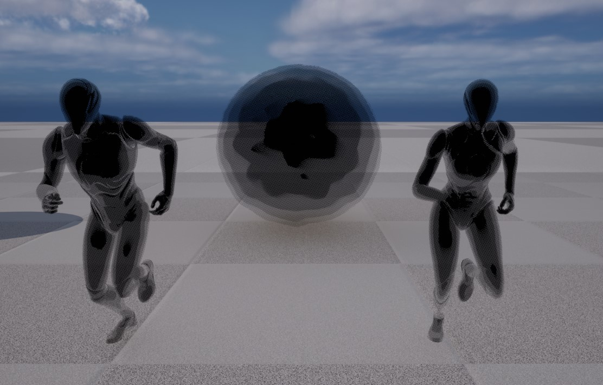GRID MATERIAL
Ideal for prototypes or low-poly games. This material lets you change the color of its 16 sections using a Material Instance.
This material divides the UV into 16 parts, giving each a color. It could be expanded to include more features if needed.
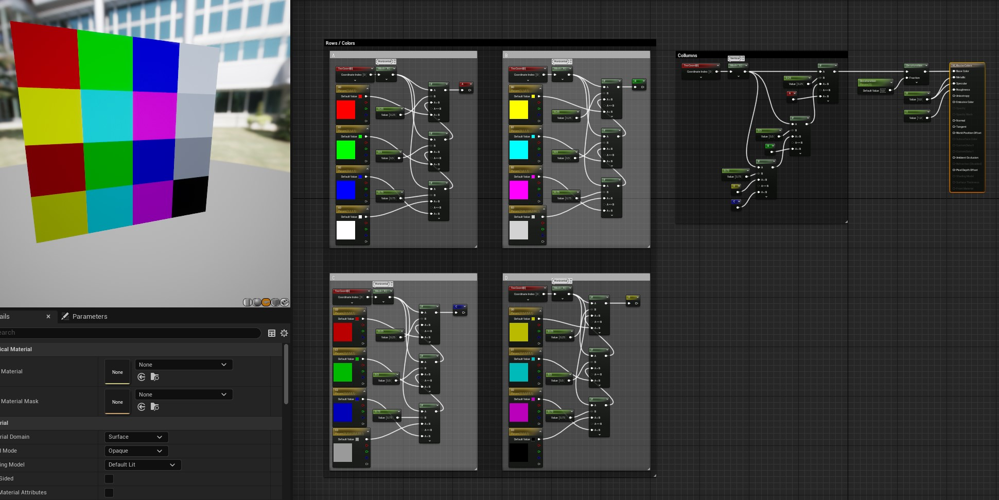In Blender, I've aligned the UVs to match the color sections on the UV grid. For convenience one might want to have a mockup texture with the final colors to use in the UV-ing process.
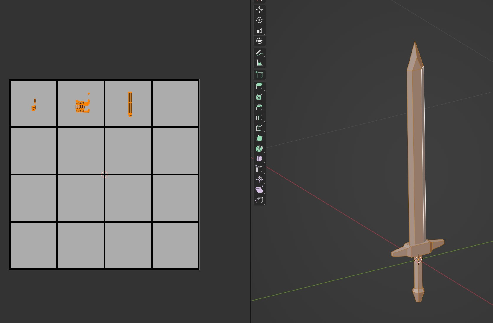All prototype assets use this single material, allowing for one draw call and up to 16 colors per asset.

Using a Material Instance, you can easily pick the color for each section.
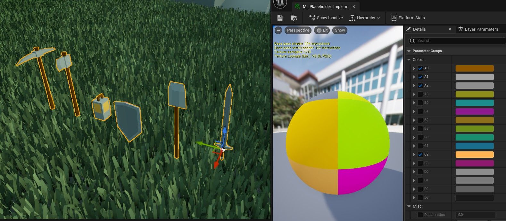ASTERMINER (UE5, WIP)
In Asterminer, you control a truck-ship, gather crystals, and load them onto a train. The concept originates from an earlier game I designed for Android/iOS, achieving over 50k+ premium downloads.
The prototype showcases a 6-wheeled rover, each wheel having its own suspension. It's enjoyable to drive and uses interpolation instead of physics. The video displays the under-the-hood mechanics, emphasizing how it traces and adjusts to the terrain's shape.
Created material for the collectible crystals. Each actor chooses a random shape, rotation, and size when placed.
Control the train as it moves on tracks. It includes a junction system letting you choose paths and transition smoothly between splines.
A brief demo explaining the junction's construction within the editor.
BANDITS (UE4, 2018, Steam) - Epic Mega Grant Recipient
Bandits was my first PC game released on Steam. It features a PvP mode and a PvE story mode. The game sports a lowpoly style, prioritizing gameplay and performance. Link to Game's Website. There are 8 unique playable characters in the game. I was responsible for modeling all the actors but not the environment. The development utilized both Blueprints and C++.
Here is a video of the full game in action.
Watch the destruction system in action. The game incorporates a single configurable Destructible Actor, which is used to create modules for constructing larger buildings.
This showcases the configuration of the destructible actor within its details panel. You can determine the assets used for its varying destruction states, and it supports randomization.
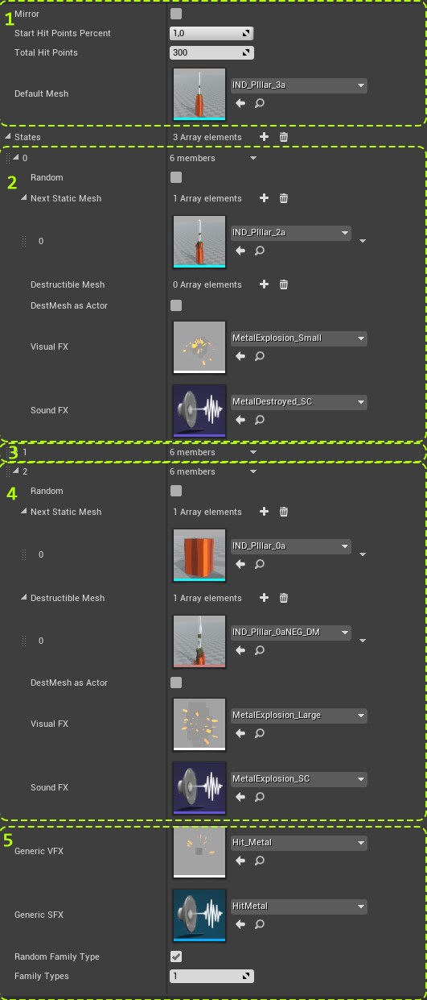A vertex animated flag.
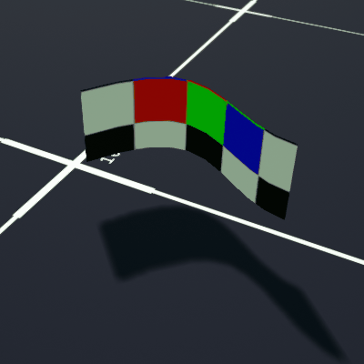A simplified collision tool. Used to define the outline of the playable area.

I modeled the tanks in Blender and employed a grid-UV technique for sectional painting. Masks were used to accentuate gameplay elements like weapon color, thruster intensity, and more.
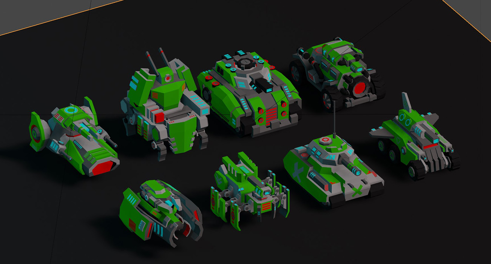The tanks consist of multiple components assembled within Unreal. All their specific secondary elements were added there as well. Only the legged tanks had their legs animated in Blender.

Maintaining a unique silhouette for the tanks was a key design consideration.
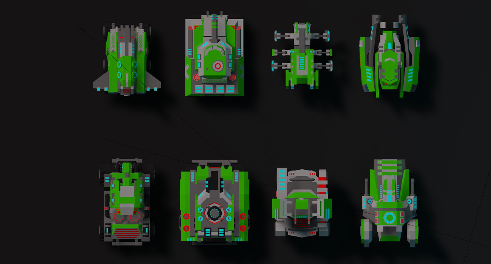I also created various enemy skeletal meshes, modular turrets, mines, and missiles.

The game's landscape material was enhanced to facilitate easy painting of a distinct low-poly environment.

Hovering Tank. Fires a big bomb, and deploys a beam generator.

AThis is a legged melee mech. It punches with one arm, fires from the other, can generate three shields around itself, and launch them as projectiles.

Displayed is a hover tank with side blasters. It can deploy a smart turret with predictive aiming capability.

A wheeled tank that fires missiles, and can place a wave of dark energy.

Here's a heavily armored tank that generates an electric arc in melee range and can set up defensive walls

An agile, legged spider-tank that executes a tri-stage magic attack and can deploy a web grenade to hinder enemies.

A classic tank equipped with a front machine gun and capable of deploying proximity mines

An agile sharpshooter that can ensnare enemies in a gravity well and target them with its side gun.